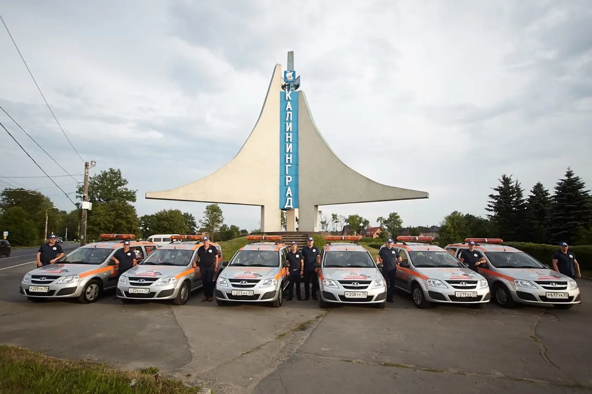
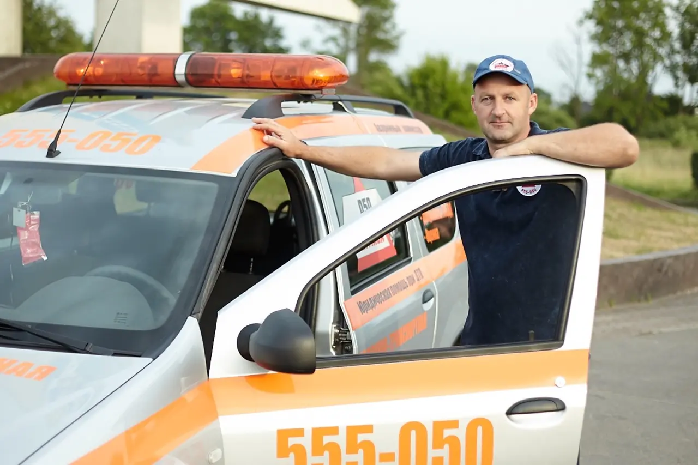
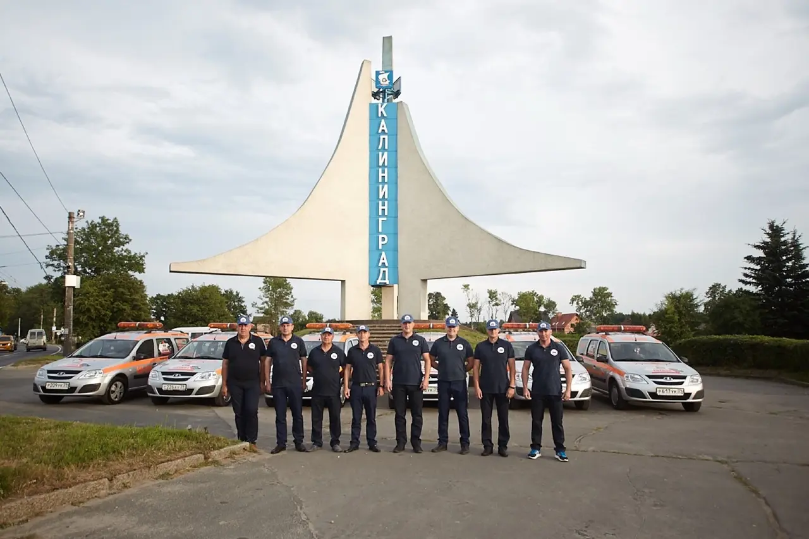

Наша задача
После столкновения даже опытный водитель может растеряться. Важно одновременно обеспечить безопасность, учесть требования правил, сохранить доказательства и корректно заполнить документы. Комиссар помогает выстроить эти действия в понятной последовательности.
Принципы работы
- Независимость. Мы не связаны с участниками ДТП, ГИБДД или конкретной страховой компанией и не определяем виновника.
- Аккуратная фиксация. Обращаем внимание на расположение машин, дорожные условия, повреждения и данные документов.
- Понятные объяснения. Рассказываем, зачем нужен каждый шаг и что будет происходить дальше.
- Связь после оформления. При необходимости помогаем с экспертизой, страховыми и правовыми вопросами.



Юридическое лицо
ИП Демиденко В.В. Офис расположен по адресу: Калининград, ул. Юрия Гагарина, 106, корпус 6, офис 5.
Где работаем
Основная зона выезда — Калининград и ближайшие направления области: Гурьевский район, Гвардейск, Зеленоградск, Пионерский, Светлогорск, Балтийск и Янтарный. По каждому адресу оператор отдельно уточняет возможность и время подачи комиссара.
Аварийный комиссар оказывает организационную и консультационную помощь, но не заменяет сотрудников полиции, медицинские службы, страховую компанию, эксперта или суд.